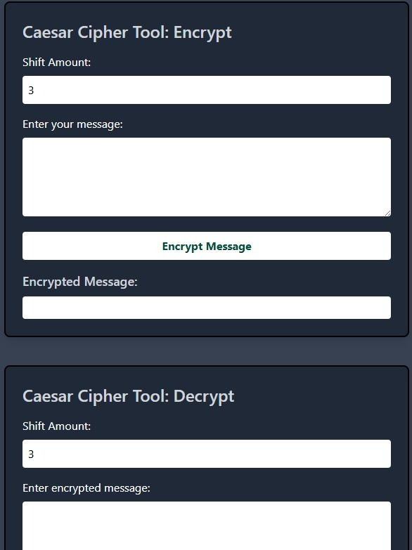
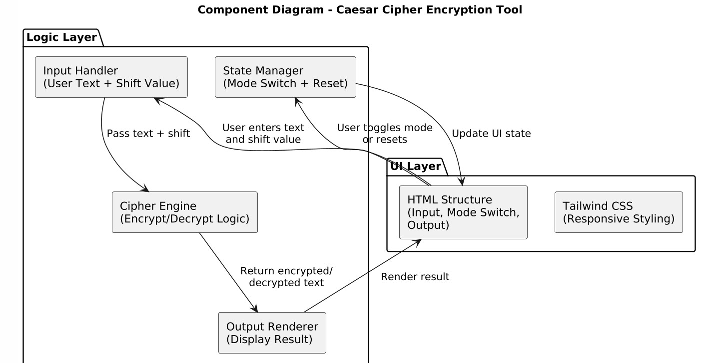
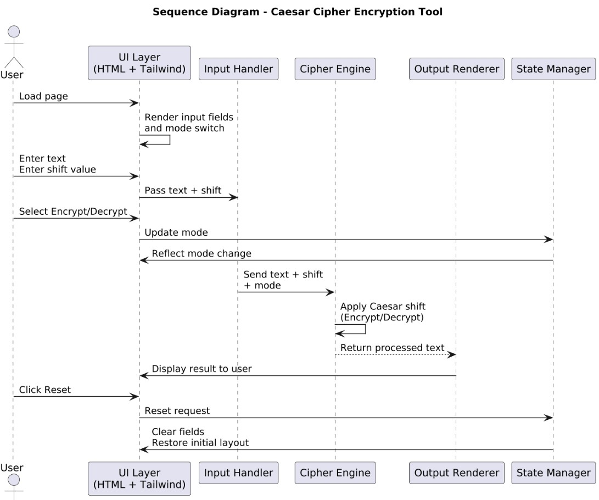
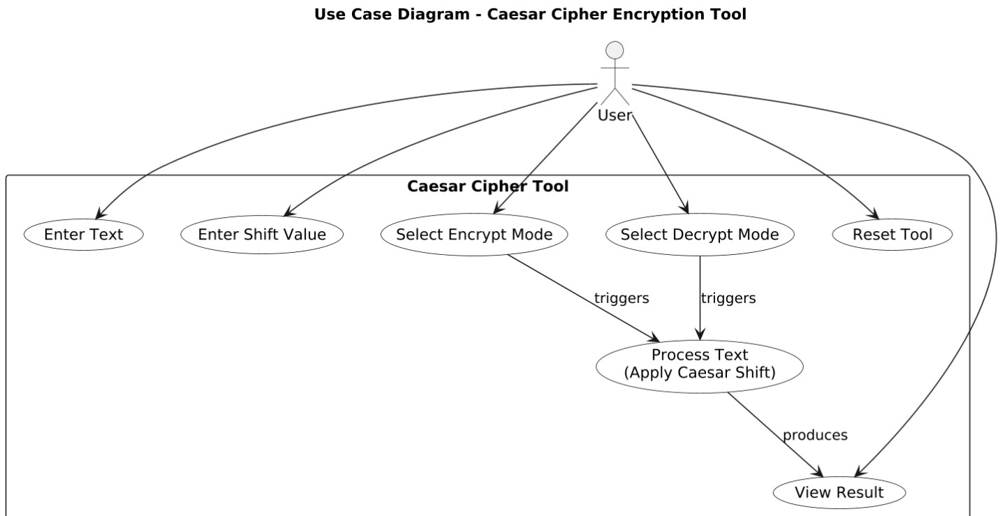

The Caesar Cipher Encryption Tool is a lightweight, interactive web application that transforms a classic cryptographic technique into a hands‑on learning experience. Instead of presenting the cipher as a theoretical concept, the project allows users to experiment directly with shifting letters, exploring how encryption and decryption work in real time. The interface is intentionally simple and modern, making the tool approachable for beginners while still demonstrating the underlying logic clearly. Built with HTML, Tailwind CSS, and JavaScript, the project showcases how even a small algorithm can become engaging when paired with thoughtful design and responsive behaviour.
The architecture is structured around a clean, modular client‑side design where each part of the system has a single, well‑defined responsibility. The UI layer handles the layout, styling, and user interactions, while the input handler collects the text and shift values. The cipher engine sits at the core, applying the Caesar shift algorithm based on the selected mode. The output renderer updates the interface instantly with the processed text, and a lightweight state manager controls mode switching and resets. This separation keeps the codebase easy to understand, extend, and maintain, even as new features or refinements are added.
Although the project is small, its internal structure is intentionally modular. The UI layer provides the visual framework, capturing user input and reflecting state changes. The input handler validates and prepares the text and shift value before passing them to the cipher engine, which performs the actual transformation. The output renderer then displays the encrypted or decrypted result with immediate feedback. Meanwhile, the state manager oversees the encrypt/decrypt mode and ensures the interface resets cleanly when the user starts over. Together, these components create a smooth, predictable flow that keeps the experience intuitive.
The data flow begins when the user enters text and selects a shift value. These inputs are captured by the UI and passed to the input handler, which normalises the data and forwards it to the cipher engine along with the current mode. The engine applies the Caesar shift, preserving non‑alphabetic characters while transforming letters according to the selected direction. Once processed, the result is returned to the output renderer, which updates the display instantly. If the user resets the tool, the state manager clears all fields and restores the initial layout, completing the cycle.
The design embraces clarity and simplicity, allowing the algorithm to take centre stage without distractions. The interface uses a calm, minimal aesthetic with Tailwind CSS ensuring responsiveness across all devices. Controls are deliberately straightforward, with a clear mode toggle and an easy reset action so users always feel in control. The goal was to make cryptography feel accessible rather than intimidating, turning a centuries‑old cipher into something playful, modern, and easy to explore. Every interaction is designed to feel immediate, clean, and satisfying.
One of the key challenges was handling edge cases such as negative shifts, large shift values, and mixed character sets while keeping the logic readable and efficient. Ensuring the UI remained intuitive across different devices required careful attention to spacing, contrast, and responsiveness. The project reinforced the value of modular design, showing how even a simple tool benefits from clear separation between input handling, core logic, and UI rendering. It also highlighted how thoughtful presentation can transform a basic algorithm into an engaging learning experience.
“Sometimes the smallest algorithm can reveal the biggest insight: even simple rules can reshape the way we communicate.”
Looking ahead, I plan to expand the tool with additional ciphers like Vigenère and Atbash, allowing users to explore a wider range of cryptographic techniques. Adding features such as file input/output, support for multiple languages, and a visual representation of the shifting process could further enhance the educational value. Integrating a history log or user accounts would allow users to save their work and track their learning progress over time. Overall, the goal is to create a comprehensive, interactive platform for exploring classical encryption methods in a modern context.



